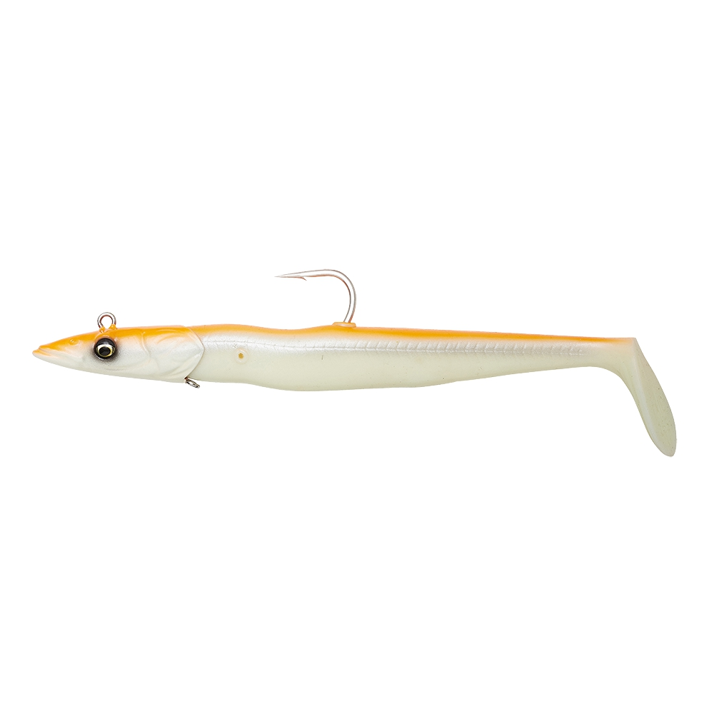
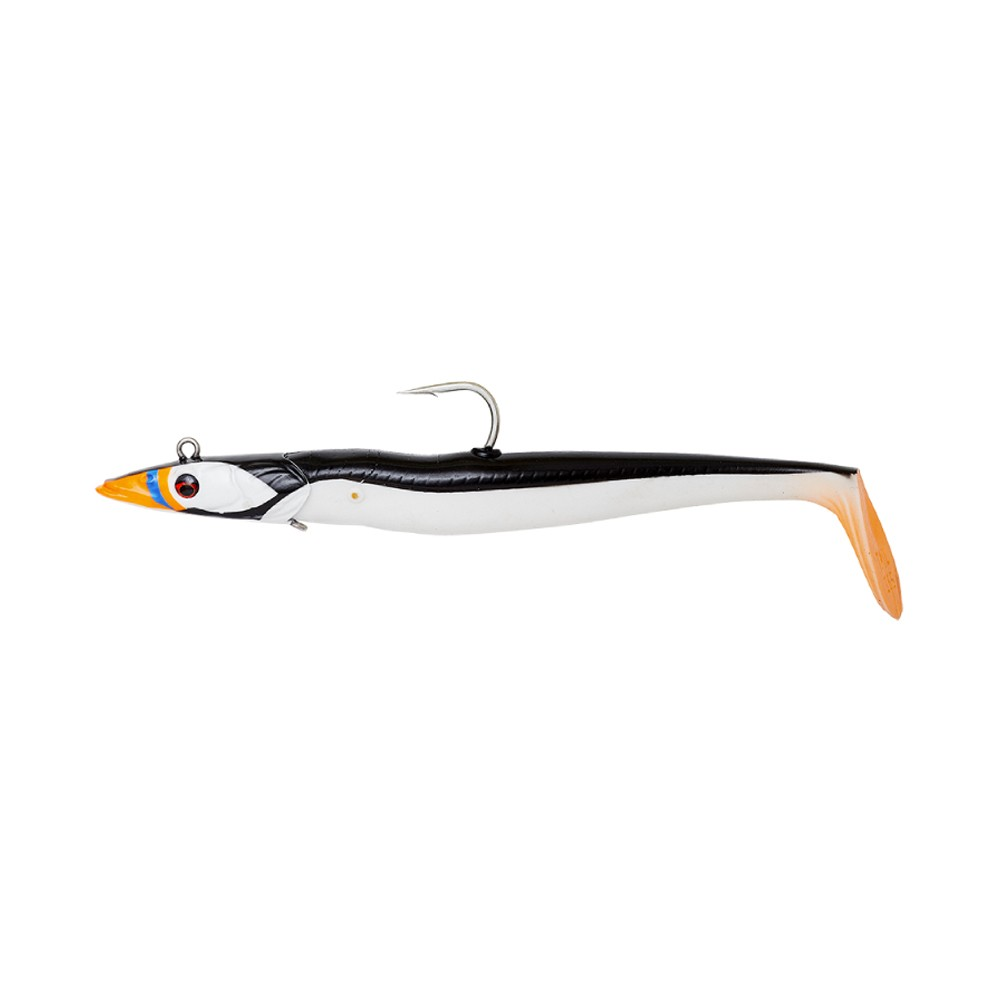
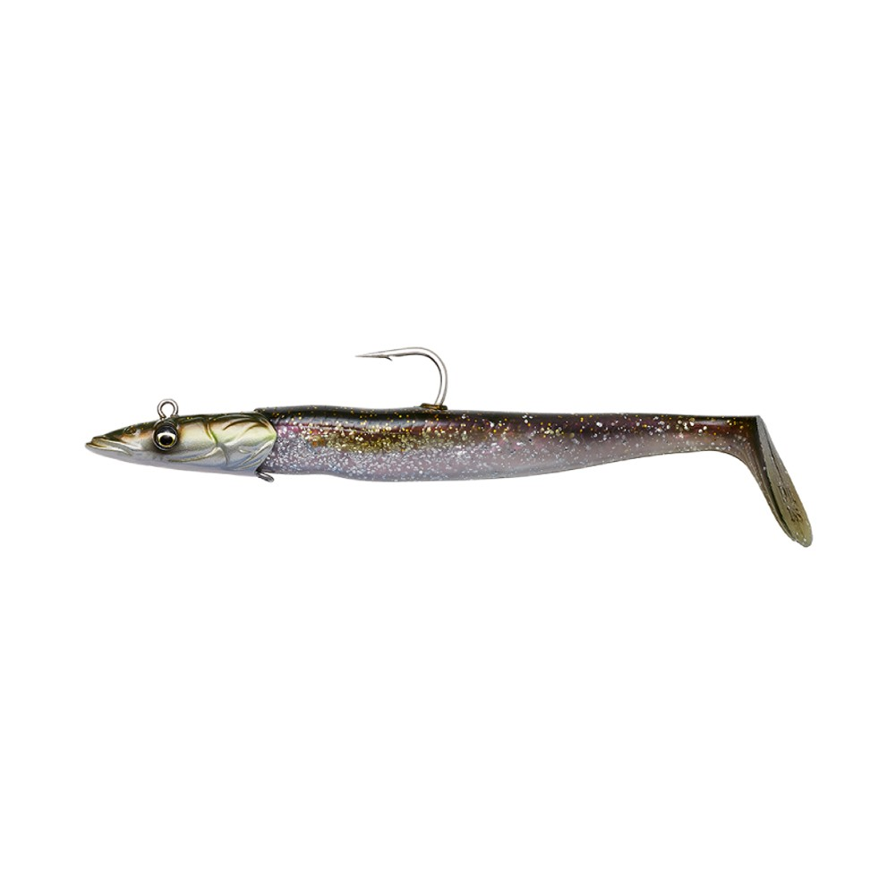
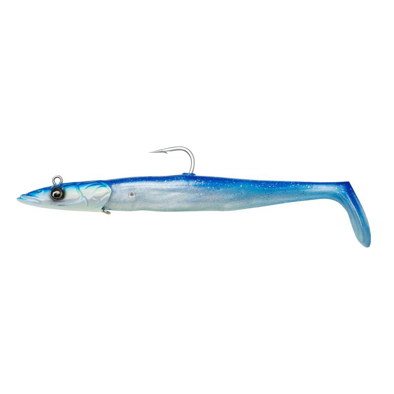
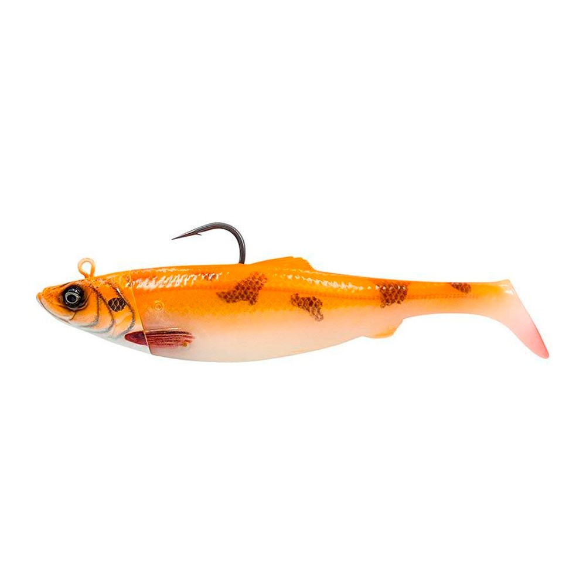
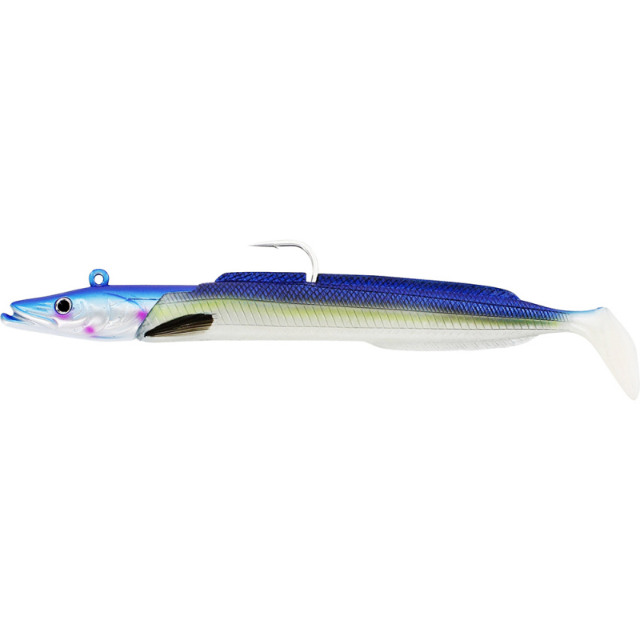
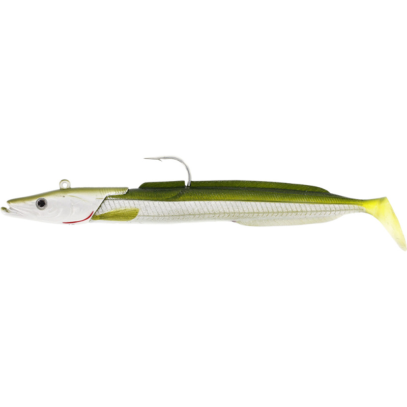

SG Sandeel V2 BG · 140 g · 21,5 cm
UV
Płycizna w pełnym słońcu
GŁĘBOKOŚĆ 10–30 m · prąd słaby/średni
KOLOR jasno · klarowna woda — tu UV-A jest najsilniejsze (płytko)
Najlżejsza z UV-linii. Na płytkim szelfie do ~30 m słońce ładuje UV najmocniej. Powolny twitch + drop gdy drapieżniki polują na tobiasza w jasnej toni.

SG Sandeel V2 BG · 175 g · 23,5 cm
UV
Średnia głębokość, jasny dzień
GŁĘBOKOŚĆ 20–50 m · prąd średni
KOLOR jasno · klarowna woda — UV podbija widoczność na krawędzi
Waga pośrednia na umiarkowany pływ. W słońcu UV utrzymuje sygnał głębiej niż naturalny kolor sam by dał. Krawędzie 20–50 m.

SG Sandeel V2 BG · 275 g · 27,5 cm · Puffin
UV
Kontrast + UV — działa w każdym świetle
GŁĘBOKOŚĆ 30–80 m · prąd mocny
KOLOR jasno + pochmurno (czarno-biało-pomarańczowy kontrast + UV)
Maskonur: czarny grzbiet, biały brzuch, pomarańczowy akcent. Silny kontrast czytelny w słońcu, a UV dokłada sygnał. Killing zone 30–80 m w nurcie.

SG Sandeel V2 BG · 275 g · 27,5 cm · Green Silver
UV
Imitacja czarniaka w słońcu
GŁĘBOKOŚĆ 30–80 m · prąd mocny
KOLOR klarowna woda + słońce (naturalny saithe + UV pomocniczo)
Miniatura czarniaka — naturalna ofiara halibuta. W słońcu nad skalistym dnem/rumowiskiem. Świetny przy dryfie wzdłuż jasno oświetlonej krawędzi.

SG Sandeel V2 BG · 275 g · 27,5 cm · Blue Pearl Silver
UV
Sørøya klasyka na jasny dzień
GŁĘBOKOŚĆ 30–80 m · prąd mocny
KOLOR klarowna głęboka woda + jasno (pearl + UV)
Niebieski baitfish — uniwersalny strzał na słoneczny dzień przy głębszej krawędzi. Pearl błyszczy, UV podbija. Klasyk Sørøya.

SG 4D Herring Big Shad · 300 g · 25 cm · Red Fish
UV
Trofeowy halibut na karmazynie
GŁĘBOKOŚĆ 30–80 m i głębiej · prąd mocny
KOLOR jasno + pochmurno · skaliste dno gdzie żyje karmazyn (UV details)
Red Fish = imitacja karmazyna (Sebastes), kluczowa ofiara halibuta. UV detale grają w jasnej toni. Pionowy jigging do dna, 5–10 m w górę i drop.

Westin Sandy Andy Jig · 150 g · 23 cm · Blue Pearl
NATURALNY
Perłowy błysk w klarownej wodzie
GŁĘBOKOŚĆ 10–40 m · prąd słaby/średni
KOLOR klarowna woda + słońce (naturalny pearl, bez UV)
Kompletny jig (głowica 150 g + 2 korpusy). Niebieskoperłowy bok rozbłyskuje gdy słońce wchodzi pod kątem — naturalna imitacja śledzia/tobiasza.

Westin Sandy Andy Jig · 150 g · 23 cm · Tobis Ammo
NATURALNY
Naturalny tobiasz nad jasnym dnem
GŁĘBOKOŚĆ 10–40 m · prąd słaby
KOLOR jasno · czyste piaszczyste/żwirowe dno (imitacja naturalnej ofiary)
Wojskowo-zielono-brązowy tobiasz nad piaszczystymi półkami. Działa najlepiej gdy słońce oświetla dno i ryba poluje wzrokiem. Pierwszy wybór gdy widać tobiasze przy dnie.

Westin Sandy Andy Jig · 300 g · 28 cm · Blue Pearl
NATURALNY
Klarowna głęboka woda, słońce
GŁĘBOKOŚĆ 30–60 m · prąd średni/mocny
KOLOR klarowna woda + słońce (pearl błyszczy pod kątem)
Pełnowymiarowa wersja 300 g w klarownej wodzie. Niebiesko-perłowe boki dają błysk widoczny z daleka, kiedy słońce wchodzi pod kątem.